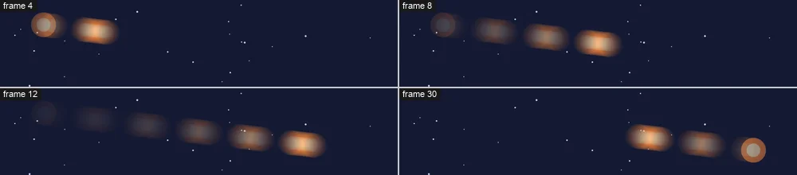

Tutorials
Motion blur, echo and time
Smear a fast comet with motion blur, give it a trail of echoes, and hold its poses for animation on twos.
This page is also a lesson inside Phoenix: choose and start Motion blur, echo and time, and Phoenix points at each control as you go. It takes about 6 minutes.
To follow along here instead, download the starting document, motion-blur-echo.fla, and open it with .

Something that moves fast looks smeared to a camera, and a little stuttery when it is drawn by hand. Phoenix can do both to a layer: Motion Blur, and Echo and Posterize Time.
The Comet layer holds a comet that whips across the night sky and back.
1. Play it
Press Enter, or click the play button in the timeline header. The comet is sharp on every frame, so it seems to jump rather than streak.
2. Turn on motion blur
Press Enter again to stop. Right-click the Comet layer's name and choose Motion Blur.
3. Play it
Press Enter, or click the play button in the timeline header. The comet smears along its path as it flies, and is sharp again where it stops.
4. Open the shutter
Press Enter again to stop. Click an empty part of the stage, then the Doc tab of the Properties panel. Under Motion Blur, set Shutter to 360.
The shutter is how long the camera looks for each frame: 180, half a frame, is the usual; 360 makes a longer streak.
5. Add echoes
Right-click the Comet layer's name and choose Echo and Posterize Time.... Set Echoes to 6, Each to 2 frames and Keeps to 60%, then click OK.
6. Play it
Press Enter, or click the play button in the timeline header. A tail of fading comets follows the real one, each a little fainter than the one before.
7. Animate on twos
Press Enter again to stop. Choose Echo and Posterize Time... on the Comet layer again, set Posterize Time to 2 frames a pose, and click OK.
8. Play it
Press Enter, or click the play button in the timeline header. Each pose now holds for two frames: the snappier look of hand-drawn animation on twos.
What you did
You smeared a fast move with motion blur, gave it a trail of echoes, and held its poses on twos. These work on any layer: tweens, motion paths and behaviors alike, on the stage and in every export.
Try Posterize Time at 4 or more for a jerky, stop-motion look, or Keeps at 90% for a long, bright trail.
For everything this tutorial touches on, see Behaviors.